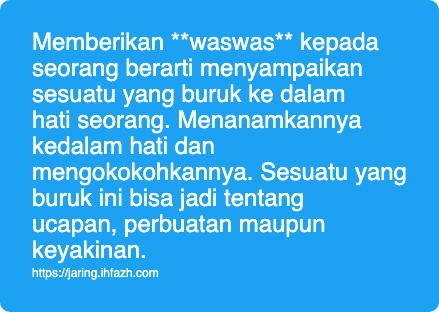

Tentang Waswas
Memberikan waswas kepada seorang berarti menyampaikan sesuatu yang buruk ke dalam hati seorang. Menanamkannya kedalam hati dan mengokokohkannya. Sesuatu yang buruk ini bisa jadi tentang ucapan, perbuatan maupun keyakinan.
Ada banyak cara untuk melakukan ini, berikut diantaranya. Saya sebutkan secara lepas, bisa jadi satu dengan yang lainnya saling berkaitan atau sama.
Menggambarkan yang baik adalah buruk dan yang buruk adalah baik. Ketika seorang menyatakan bahwa riba adalah bunga, ini berarti menggambarkan sesuatu yang buruk dengan sesuatu yang baik dan menarik. Beragama adalah kekangan, ini berarti menggambarkan sesuatu yang baik dengan sesuatu yang buruk. Bahasa sekarangnya adalah melakukan framing yang intinya yang baik jadi buruk dan yang buruk menjadi baik.
Contoh lain adalah menundukkan kaum yang dzolim dengan senjata adalah barbar, sekelompok manusia yang mempertahankan tanah, harta, dan jiwa adalah teroris, kembali kepada agama Alloh dan menjauhi sebab sebab perpecahan adalah .... (isi sendiri), ini adalah diantara framing - framing sehingga orang akan menganggap suatu kebaikan sebagai keburukan.
Cara yang lainnya adalah menyampaikan keburukan terus menerus kepada si-target. Bila target adalah banyak orang, maka dia akan gunakan media yang bisa menjangkau banyak orang, semisal podium pemerintahan, tv, social media. Dia akan sounding terus keburukan itu, sehingga - harapan mereka - perbuatan tersebut adalah new normal.
Di sini pentingnya terus tegar dalam amar makruf nahi mungkar, sehingga pupus harapan mereka. Bila ibadah amar makruf nahi mungkar kita tinggalkan, dengan berbagai alasan juga yang itu merupakan waswas, seperti tidak berguna lagi, orang sudah jeleh mendengar peringatan, orang sudah pada tahu bahwa perbuatan itu tidak boleh sehingga kita berhenti melakukan ibadah tersebut, namun sounding keburukan masih terus jalan, maka wassalaam. Karena sebab itulah waswas berhasil di tanamkan. Mungkin bukan di generasi kita, akan tetapi di generasi anak atau cucu kita.
Yang lainnya, masih sama dengan sebelumnya tapi ini perorangan. Hati sangat ditakutkan untuk tergelincir. Meskipun tidak ada hiasan dalam ucapan, dan bujuk rayu. Bahkan mungkin itu hanya sekedar canda. Misal: "kamu kan namanya adalah fulan, fulan itu suka minum khomer". Ucapan ini terus diucapkan ke si target. Hari hari target mendengarkan ucapan ini. Waswas menancap ke dalam hati, dan bisa sangat mungkin suatu hari dia akan melakukannya. Semoga Alloh lindungi kita dari bisikan, dan lindungi dari efek ucapan buruk ini.
Kalau ini adalah kerjaannya setan dari bangsa jin, mereka ikut memanipulasi mimpi kita sehingga seakan akan melakukan keburukan. Mimpi yang terus di ulang, meskipun dengan tema, latar, orang yang berbeda, alur cerita yang berbeda. Namun tujuan waswas sama. Selain itu juga memberikan rasa takut, gelisah, bahkan tidak jarang rasa permusuhan antara saudara atau bahkan suami istri.
Waswas ini banyak sekali, dan nyata. Menancap di hati, dan berefek pada perbuatan. Mari kita perbanyak meminta perlindungan kepada Alloh dari waswas ini.